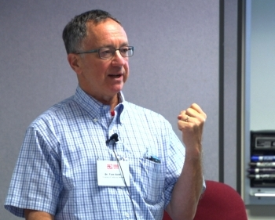

Introduction to Sociology

Fall 2024
Prof. Thomas Gold
Lecture: Mon & Wed 11:00 am - 12:30 pm, Location: Dwinelle 155
Office Hour: Wed 1:00 pm - 3:00 pm, 436 Social Sciences Building (SSB) (Emeriti Office)
Course Content- Section 109 & 110
| Week |
Date |
Lecture |
Readings |
Discussion Notes |
| 1 |
08/28 & 08/30 |
Introduction |
Mills, The Promise
Banks-Santilli, Guilt...
Nathan, Welcome to "Any U"
|
-- |
| 2 |
09/04 & 09/06 |
Sociology as a Way of Seeing |
Bourdieu, on Field
Miner, Body Ritual among the Nacirema
Tsuji, Encounters with the Elderly in America
|
Discussion Syllabus |
| 3 |
09/09 & 09/11 |
The Individual and Society |
Durkheim, Suicide
Durkheim, Dualism...
Goffman, The Presentation of Self...
|
Discussion-9th_Sep
Discussion-11th_Sep
|
| 4 |
09/16 & 09/18 |
Socialization and Deviance |
Foucault, Discipline and Punish, on Panopticism
Goffman, Asylums
|
Discussion-17th_Sep
Discussion-19th_Sep
|
| 5 |
09/23 & 09/25 |
Culture |
Anderson, The Code of the Streets
Bourdieu, Distinction, The Aristocracy of Culture
Vance, Hillbilly Elegy
|
Discussion-24th_Sep
Discussion-26th_Sep
|
| 6 |
09/30 & 10/02 |
Education |
Bellows, A Campus Where Everyone Is Just Like You
Carol Christ - Berkeley News
Hoover, An Asian American Scholar...
Isaacs, Its Time to Start Teaching Your Students How to Be a Student
Currell, 2024 Was the Year That Broke College Admissions - NYT
|
Midterm Review Game - Jeopardy
Midterm Review - Jeopardy Key
Midterm Review Slides
|
| 7 |
10/07 |
--Midterm Week-- |
--Midterm Week-- |
--Midterm Week-- |
| 8 |
10/14 & 10/16 |
Stratification |
Weber - Class, Status, Party
Marx & Engels, Manifesto of the Communist Party
Davis and Moore, Some Principles of Stratification
|
Discussion-14th_and_16th_Oct |
| 9 |
10/21 & 10/23 |
Race and Ethnicity |
Coates, Between the World and Me
Du Bois, The Black Worker
Mora, et al., Who Identifies as “Latinx”
|
Discussion-22nd_Oct
Discussion-24th_Oct
|
| 10 |
10/28 & 10/30 |
Gender |
Bernstein, Where Can Men Go to Become Better Men
Daub, Gender and Its Enemies
Duan and Long, Women Movements
|
Discussion-29th_Oct
Discussion-31st_Oct
|
| 11 |
11/04 & 11/06 |
Politics, Social Movements, Civil Society |
Putnam, Bowling Alone
Tocqueville_ Book II Chapter 5
Weber, Politics as a Vocation (Hackett)
Weber, Politics as a Vocation (FMW)
|
Discussion-5th_Nov
Discussion-7th_Nov
|
| 12 |
11/13 |
Marriage and Family |
Hochschild, The Time Bind
Rad dads_ Four families paths to parenthood
|
Discussion-14th_Nov |
| 13 |
11/18 & 11/20 |
Globalization and Migration |
Allison, Thucydides trap has been sprung in the Pacific
Bak, McDonald in Seoul
Barber, Jihad vs. McWorld
Bloemraad, Claiming membership...
Huntington, The Clash of Civilizations
|
Discussion-19th_Nov
Discussion-21st_Nov
|
| 14 |
11/25 |
Globalization and Migration (Contd...) |
-- |
Social Science Research |
| 15 |
12/2 & 12/4 |
--Final Review Week-- |
--Final Review Week-- |
--Final Review Week-- |
| 16 |
12/9 & 12/11 |
--RRR Week-- |
--RRR Week-- |
--RRR Week-- |
| 17 |
12/16 |
--Final Exam-- |
--Final Exam-- |
--Final Exam-- |